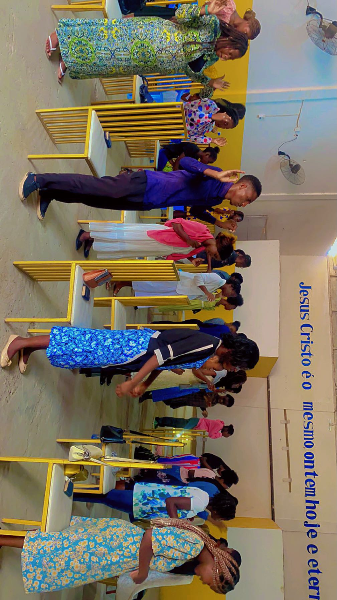
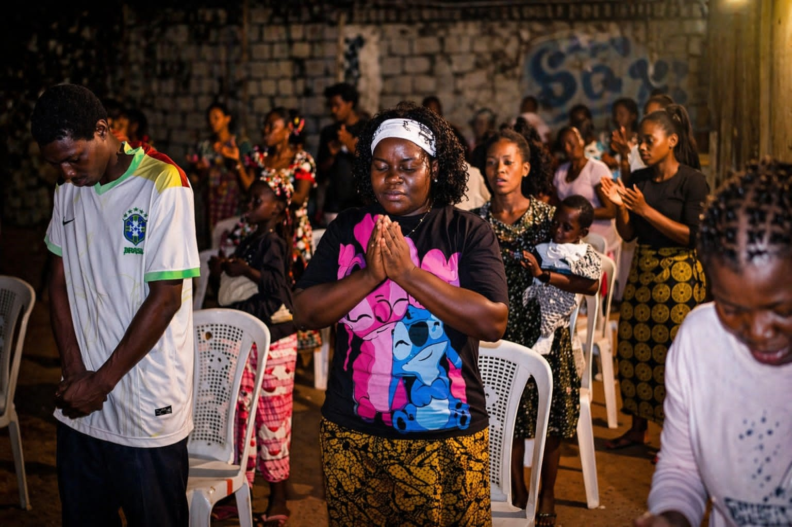

Congregação Central
Sede da visão, cultos gerais, consagrações e principais encontros ministeriais.

Uma página mais visual e organizada para ajudar membros e visitantes a identificar a casa mais próxima e perceber a força da expansão ministerial.
Sede da visão, cultos gerais, consagrações e principais encontros ministeriais.

Uma frente congregacional com forte impacto local, evangelismo e acompanhamento familiar.

Cultos de avivamento, ensino e fortalecimento da família cristã.
Mantive aqui apenas os dados congregacionais que já aparecem de forma consistente no projecto. Se me enviares os restantes endereços e contactos, eu completo sem inventar nada.